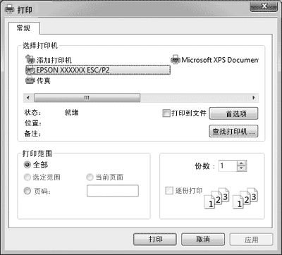
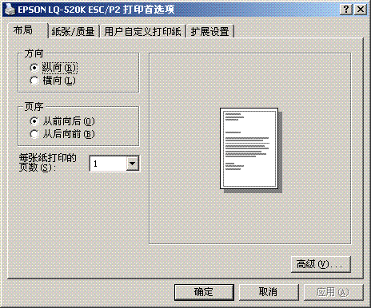
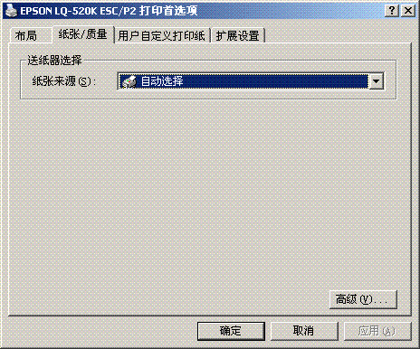
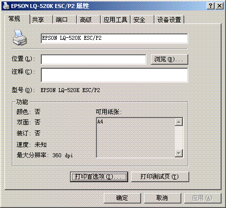
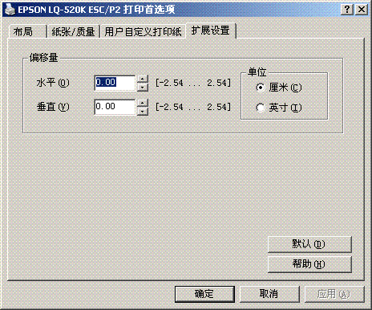

|
|
|||
 |
||||
使用打印机驱动程序
有两种访问打印机驱动程序的方法：从Windows应用程序或从开始菜单。
从Windows应用程序中访问打印机驱动程序时，您所设定的任何设置仅适用于正在使用的应用程序。 有关更多信息，参见从Windows应用程序访问打印机驱动程序。
从开始菜单中访问打印机驱动程序时，您所做的打印机驱动程序设置适用于所有的应用程序。 有关更多信息，参见从开始菜单访问打印机驱动程序。
参见更改打印机驱动程序设置可检查和更改打印机驱动程序设置。
 注释：
注释：|
由于许多Windows应用程序会覆盖用打印机驱动程序设定的设置，而有些则不会覆盖，所以您必须检查打印机驱动程序设置是否符合您的要求。
|
从Windows应用程序中访问打印机驱动程序
要从Windows应用程序中访问打印机驱动程序，请遵循以下步骤：
 |
从应用程序软件的文件菜单中选择打印设置或打印。 在显示的打印或打印设置对话框中，确保在名称的下拉列表中已选择您的打印机。
|

 |
单击打印机、设置、属性或选项或首选项。
（根据您使用的应用程序来单击按钮，也可以按需要单击这些按钮的组合。）打印首选项窗口，您看到布局、纸张/质量、用户自定义打印纸和扩展设置菜单。
这些菜单包含打印机驱动程序设置。
|

 |
要查看菜单，请单击窗口顶部相应的标签。 请参见更改打印机驱动程序设置来更改这些设置。
|


从开始菜单访问打印机驱动程序
要从开始菜单访问打印机驱动程序，请遵循以下步骤：
|
对于Windows 8.1或8:
单击开始屏幕上的桌面，移动光标至屏幕的右上角，单击设置，然后单击控制面板，再从硬件和声音类别中单击浏览设备和打印机。 |
对于Windows 7:
单击开始，再单击设备和打印机。
单击开始，再单击设备和打印机。
对于Windows Vista:
单击开始, 单击控制面板，再单击硬件和声音, 然后单击打印机。
单击开始, 单击控制面板，再单击硬件和声音, 然后单击打印机。
对于Windows XP Professional edition:
单击开始，并单击打印机和传真。
单击开始，并单击打印机和传真。
对于Windows XP Home edition:
单击开始，再单击控制面版，然后单击打印机和传真。
单击开始，再单击控制面版，然后单击打印机和传真。
对于Windows 2000：
单击开始，指向设置，然后单击打印机。
单击开始，指向设置，然后单击打印机。
|
右击打印机图标，再单击打印首选项。 显示打印首选项窗口屏幕，此屏幕包含布局、纸张/质量、用户自定义打印纸和扩展设置菜单。 这些菜单显示打印机驱动程序设置。
|
右击打印机图标，在显示的菜单中单击属性(Windows Vista、XP和2000)或打印机属性
(Windows 8.1、8和7)时，属性窗口出现，此窗口包含的菜单可用于进行打印机驱动程序设置。
注释：|
虽然在Windows 8.1、8和7菜单中有属性和打印机属性显示，不要单击属性。
|

|
要查看菜单，请单击窗口顶部相应的标签。 请参见打印机驱动程序设置概述来更改这些设置。
|
更改打印机驱动程序设置
您可以通过打印机驱动程序的四个菜单（布局、纸张/质量、用户自定义打印纸和扩展设置）来更改打印机驱动程序设置，
您还可以在打印机软件的应用工具菜单中更改设置。 有关这些可用设置的概述，请参见打印机驱动程序设置概述。
如果您正在使用Windows XP或2000，您还可以通过在驱动程序中右击项目并选择这是什么？来浏览用户帮助。
在打印机驱动程序屏幕上单击帮助按钮。

结束打印机驱动程序设置后，请单击确定应用所设定的设置，或单击取消取消所做的更改。
一旦检查过打印机驱动程序设置并根据需要作了更改，即可准备打印。